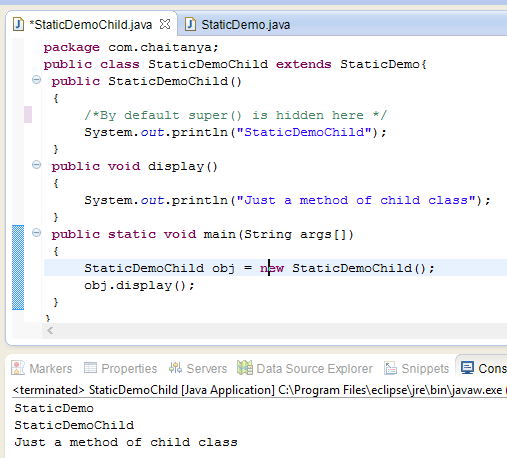
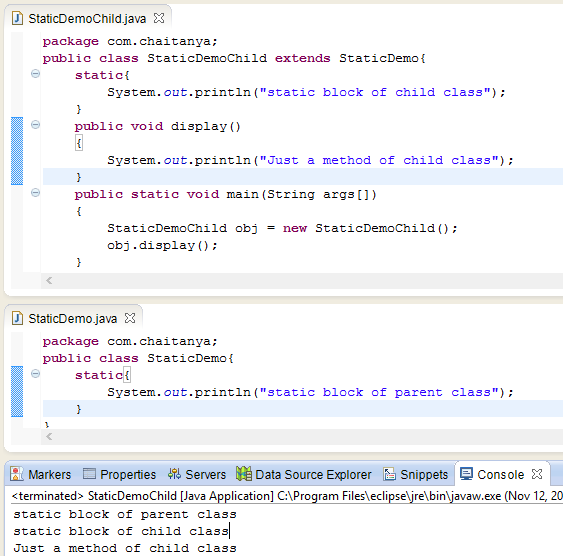

Have you heard of static constructor in Java? I guess yes but the fact is that they are not allowed in Java. A constructor can not be marked as static in Java. Before I explain the reason let’s have a look at the following piece of code:
public class StaticTest
{
/* See below - I have marked the constructor as static */
public static StaticTest()
{
System.out.println("Static Constructor of the class");
}
public static void main(String args[])
{
/*Below: I'm trying to create an object of the class
*that should invoke the constructor
*/
StaticTest obj = new StaticTest();
}
}
Output: You would get the following error message when you try to run the above java code.
“modifier static not allowed here”
Why java doesn’t support static constructor?
It’s actually pretty simple to understand – Everything that is marked static belongs to the class only, for example static method cannot be inherited in the sub class because they belong to the class in which they have been declared. Refer static keyword.
Lets back to the point, since each constructor is being called by its subclass during creation of the object of its subclass, so if you mark constructor as static the subclass will not be able to access the constructor of its parent class because it is marked static and thus belong to the class only. This will violate the whole purpose of inheritance concept and that is reason why a constructor cannot be static.
Let’s understand this with the help of an example –

public class StaticDemo
{
public StaticDemo()
{
/*Constructor of this class*/
System.out.println("StaticDemo");
}
}
public class StaticDemoChild extends StaticDemo
{
public StaticDemoChild()
{
/*By default super() is hidden here */
System.out.println("StaticDemoChild");
}
public void display()
{
System.out.println("Just a method of child class");
}
public static void main(String args[])
{
StaticDemoChild obj = new StaticDemoChild();
obj.display();
}
}
Output:
StaticDemo
StaticDemoChild
Just a method of child class
Did you notice? When we created the object of child class, it first invoked the constructor of parent class and then the constructor of it’s own class. It happened because the new keyword creates the object and then invokes the constructor for initialization, since every child class constructor by default has super() as first statement which calls it’s parent class’s constructor. The statement super() is used to call the parent class(base class) constructor.
This is the reason why constructor cannot be static – Because if we make them static they cannot be called from child class thus object of child class cannot be created.
Another good point mentioned by Prashanth in the comment section: Constructor definition should not be static because constructor will be called each and every time when object is created. If you made constructor as static then the constructor will be called before object creation same like main method.
Static Constructor Alternative – Static Blocks
Java has static blocks which can be treated as static constructor. Let’s consider the below program –

public class StaticDemo{
static{
System.out.println("static block of parent class");
}
}
public class StaticDemoChild extends StaticDemo{
static{
System.out.println("static block of child class");
}
public void display()
{
System.out.println("Just a method of child class");
}
public static void main(String args[])
{
StaticDemoChild obj = new StaticDemoChild();
obj.display();
}
}
Output:
static block of parent class
static block of child class
Just a method of child class
In the above example we have used static blocks in both the classes which worked perfectly. We cannot use static constructor so it’s a good alternative if we want to perform a static task during object creation.
Hi,
Static method cannot be inherited in the sub class. Would you please give me one example.
Hi Pravat, You can overload a static method but you can’t override a static method. Actually you can rewrite a static method in subclasses but this is not called a override because override should be related to polymorphism and dynamic binding. The static method belongs to the class so has nothing to do with those concepts. The rewrite of static method is more like a shadowing.
static member can be inherited but cannot be overridded by subclass.
class Parent {
static int i = 10;
public static void method()
{
System.out.println(i);
}
}
class Child extends Parent {
public void abc ()
{
method(); // child class is inheriting static method
}
public static void main (String args[])
{
Modifier m = new Modifier();
m.abc();
}
}
Hi,
You have mentioned as “It’s actually pretty simple to understand – static method cannot be inherited in the sub class. ” Shouldn’t it be “static constructor cannot be inherited in the subclass”. Please correct me if I am wrong.
That is just an example to demonstrate the purpose of static keyword. I have edited the post to make it more clear. I hope its clear now. let me know I you have any other questions.
Very useful and abstract example .. thanks for this explanation
I was searching this concept on [Stackoverflow] and in-between i lied up here.Very good explanation.Can you tell me the use of Method hiding ?
thanks a lot for this example i have been asked about it during an interview…
I never saw a such thing in production code.
Does someone can tell me if it’s really useful?
You would never find it in the production code or anywhere else because static constructors are not allowed in java and this post is to discuss the reason of it. This is the most common question that is asked during interview so here we are discuss why something is not allowed in java.
this explanation is not right.
First constructors are not inherited at all does not matter static or non-static.
Second if we even go by your concept & treat constructors as methods so the constructors have default(package-private) access specifier.It means it won’t be available in the child class.
Constructors are not static coz they violate the basic meaning of static. Static means something which is the property of a class while constructors are something which are property of an object so the reason is “concept of static constructor is basic design violation”.
Deepak,
The points you mentioned are correct. However I did not mention anywhere in the article that constructors are inherited. I just pointed out that they are being invoked during object creation of sub class, that’s all. Also, constructors are not methods because they do not have a return type. I think you got confused because of an ambiguous statement mentioned in the post. I just added more details to the post to make it easy to understand. I hope its clear now.
Hi Chaitanya. I just wanted to know what exactly is the use of a static block?
Thanks in advance.
Hi Arkya,
If you want to make something happen before your object has created. Say you want to read a file and then decide which object you want to create. it happens in real time. In that case it is useful…
You probably want to underline that static block is only called only before the first instance of the class is created.
Actually one can have static constructor by marking their class final
TO add one more point that constructor is static create static method in class and create object of that class in that staic method ie
class myclass{
myclass(){
sysout(“constructor of class”)
}
static myclass getObject{
return new myclass();
}
}
Think how we are able to access constructor from static method give
probably you have a mistake in comment to code
/*By default this() is hidden here */
here should be “super” not “this”.
Thanks for pointing it out. I have corrected it.
if cant mark constructor as static, why can we mark a method as a static and inherit in child class
Constructor definition should not be static because constructor will be called each and every time when object is created. If you made constructor as static then the constructor will be called before object creation same like main method.
Good point Prashanth.